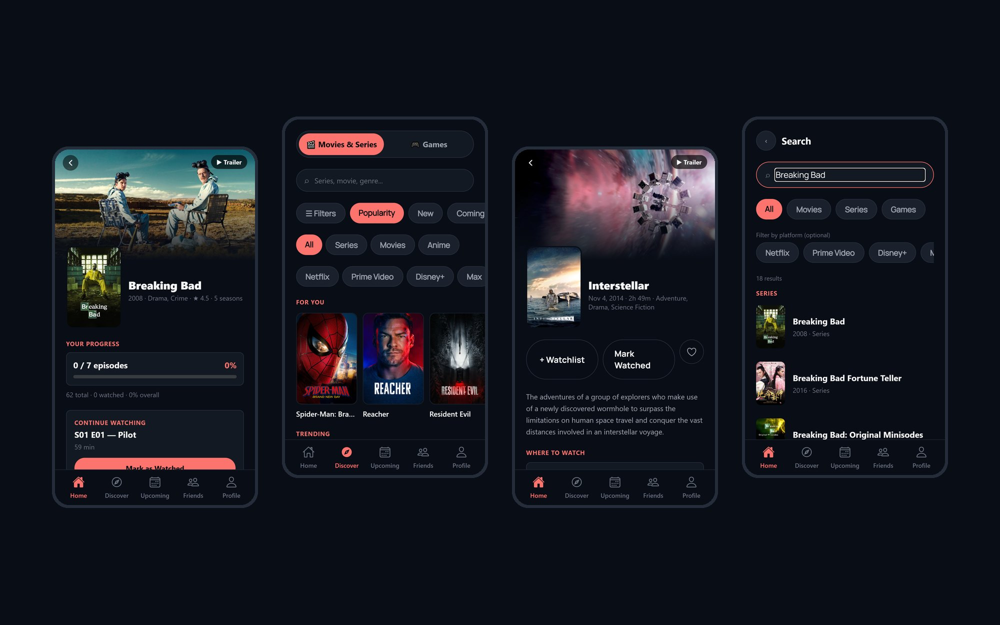
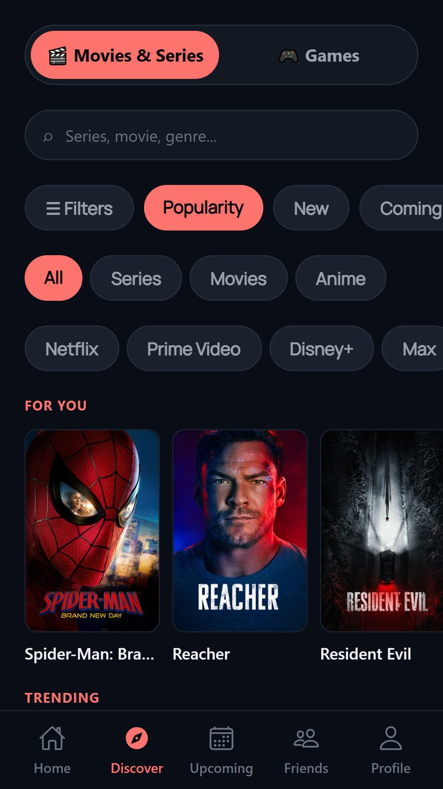
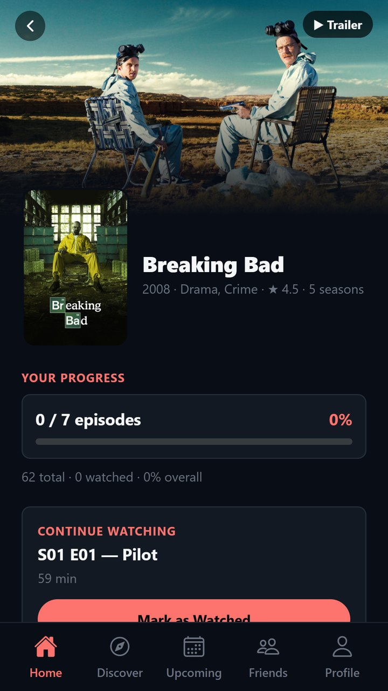
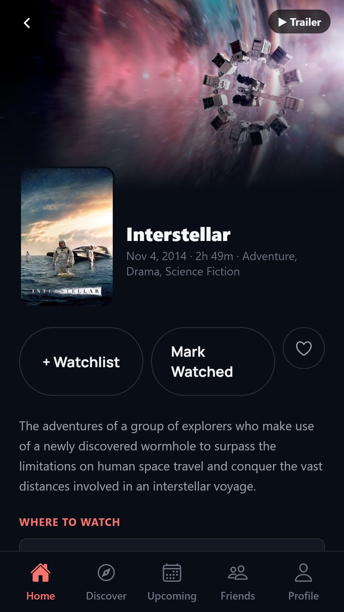
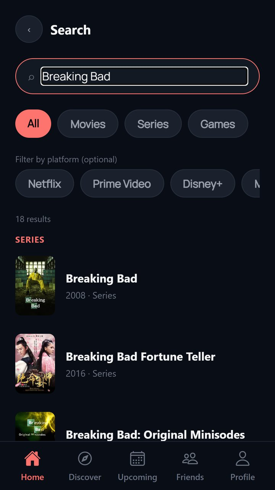
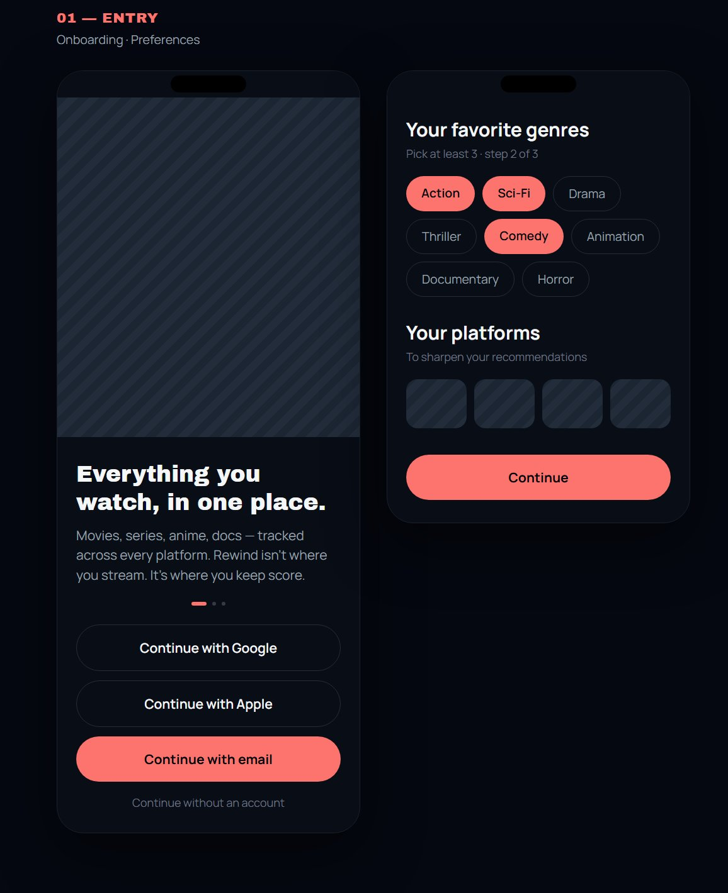
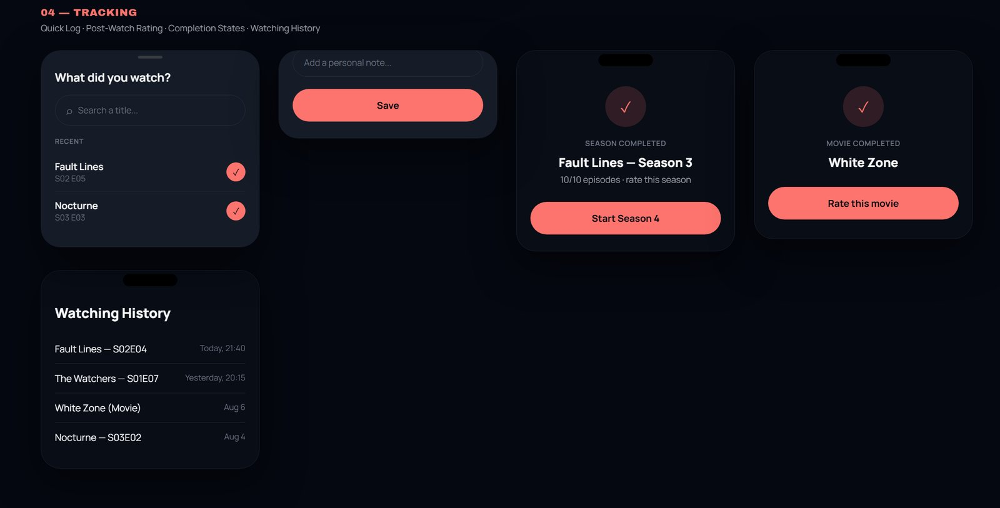
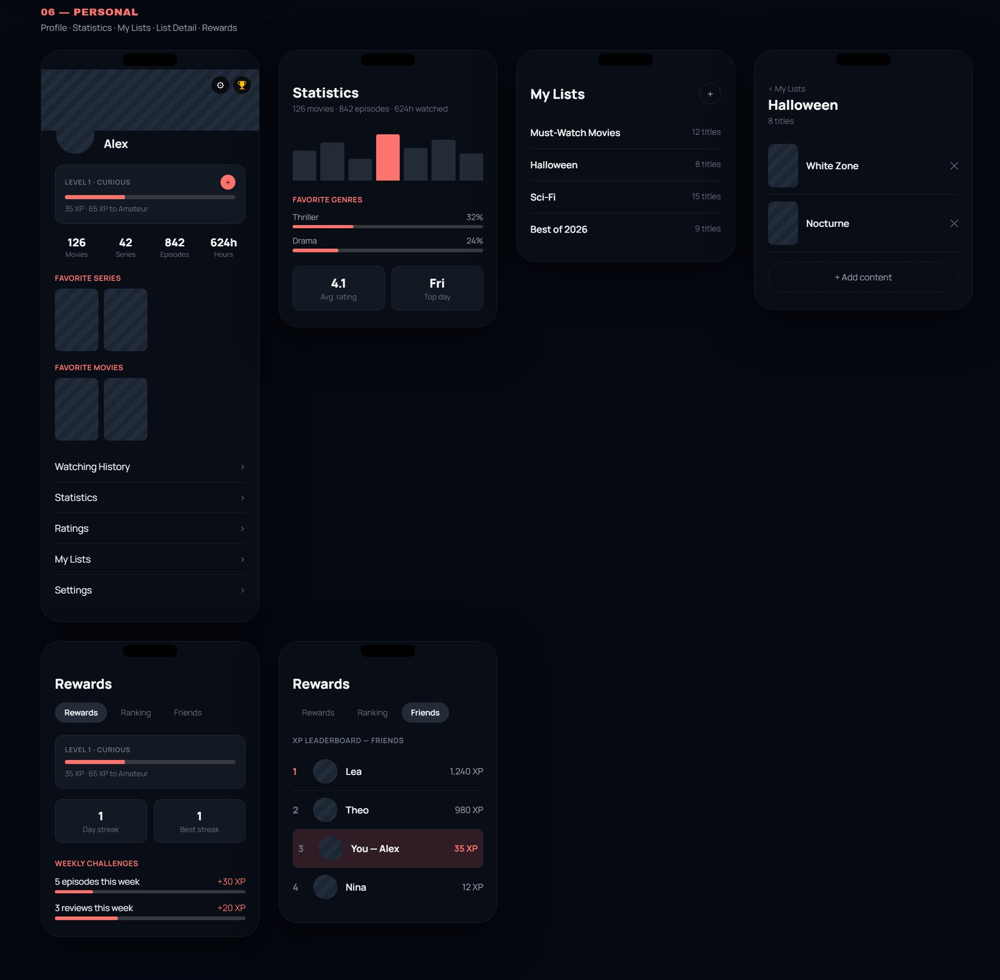
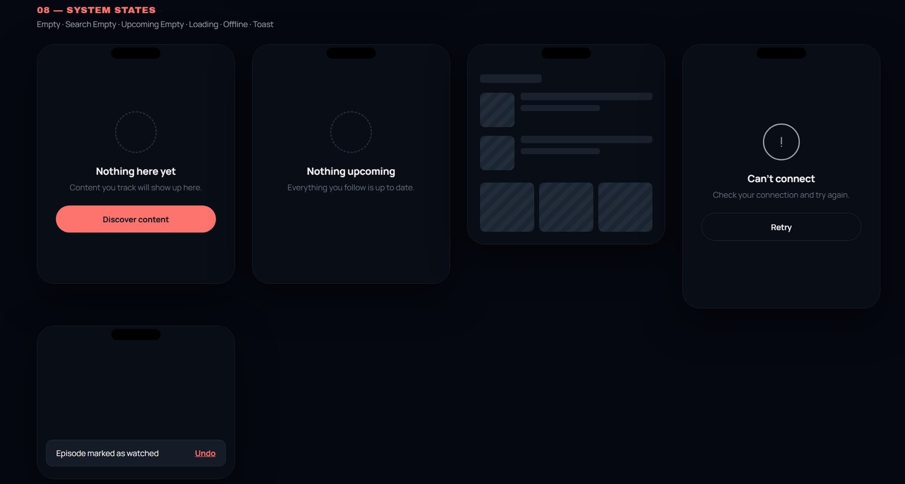
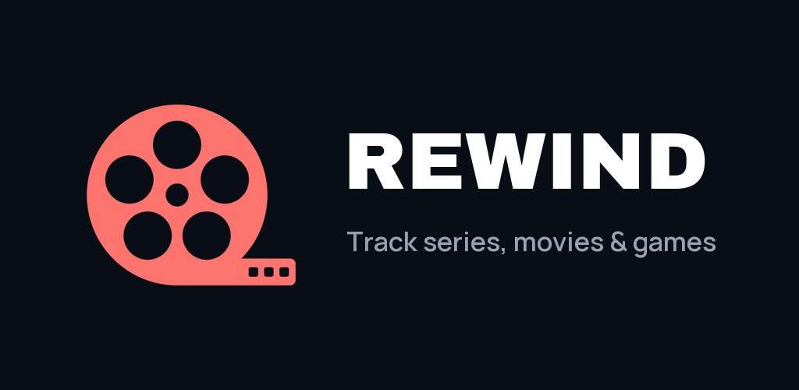

UI DESIGN
Figma
Maquettes, composants & design system.
Le journal de tout ce que l'on regarde et de tout ce à quoi l'on joue : séries, films et jeux vidéo réunis dans une seule application, conçue et développée de A à Z.

Séries, films et jeux vidéo sont aujourd'hui suivis dans des applications différentes, quand ils le sont. Résultat : on oublie à quel épisode on s'est arrêté, on rate les sorties et on perd la trace de ce que l'on a aimé. Rewind réunit les trois univers dans une expérience unique, rapide à utiliser et agréable à revisiter.
Une application pour les séries, une autre pour les films, rien de satisfaisant pour les jeux : l'historique est fragmenté.
Savoir quel épisode regarder ensuite ou quelle mission terminer doit prendre une seconde, pas une recherche.
Noter, retrouver son historique, voir ce que regardent ses amis et revivre son année en séries, films et jeux.
L'application s'organise autour de cinq onglets : Accueil, Découvrir, À venir, Amis et Profil. Chaque écran met en avant l'action la plus probable : marquer un épisode comme vu, ajouter un titre à sa watchlist ou reprendre une série en cours.




Chaque écran est d'abord passé par une maquette basse fidélité, puis a été repris en haute fidélité avec le design system. Le jeu complet est organisé en huit parcours : entrée, cœur de l'appli, contenus, suivi, social, espace personnel, compte et états système.
Dès l'onboarding, l'utilisateur choisit ses genres préférés et ses plateformes de streaming : les recommandations sont pertinentes dès la première ouverture.

Le Quick Log permet de marquer ce que l'on vient de regarder sans quitter l'écran en cours. À la fin d'une saison ou d'un film, un écran dédié invite à noter, ou à lancer directement la saison suivante. Tout est ensuite retrouvé dans l'historique, daté.

Le profil transforme le suivi en progression : niveaux et XP, séries de jours, défis hebdomadaires et classement entre amis. Les statistiques (heures regardées, genres préférés, note moyenne) et les listes personnelles nourrissent le Rewind annuel, le récapitulatif de l'année.

Un écran vide, un chargement ou une coupure réseau font partie de l'expérience. Chaque état a été dessiné : un message clair, une action pour repartir, des squelettes de chargement à la forme du contenu, et une notification avec « Annuler » après chaque action rapide.

J'ai d'abord construit le design system (couleurs, rayons, espacements, composants), puis je l'ai porté à l'identique dans le code sous forme de tokens. Chaque écran de l'application utilise les mêmes fondations, ce qui garde l'interface cohérente et rend chaque nouvel écran plus rapide à produire.
Ink 900
#080D16Surface
#131922Coral 500
#FD736DGray 100
#F5F6F8Gray 300
#9AA1ACUne couleur par statut de suivi, utilisée partout de la même façon :
Après le design, j'ai développé l'application complète : interface, navigation, données, comptes utilisateurs, partie sociale et builds Android.
Une seule base de code pour Android et le web, avec une navigation par fichiers (Expo Router) et des builds générés avec EAS.
Authentification, base de données Firestore et règles de sécurité qui contrôlent qui peut voir l'activité de chaque utilisateur.
Les données des séries et des films viennent de l'API TMDB, celles des jeux vidéo d'IGDB.
Un petit serveur proxy interroge IGDB à la place de l'application, pour ne jamais exposer les clés secrètes de l'API.
Mise en cache des données distantes et gestion de l'état local pour une interface fluide, même avec beaucoup de contenus.
Concevoir et coder le même produit m'a permis de prendre des décisions de design en connaissant leur coût technique, et de garder une interface fidèle aux maquettes jusque dans le code.

Google Play · Android
Voir sur Google PlayUI DESIGN
Figma
Maquettes, composants & design system.

IA
Claude
Maquettes haute fidélité, design system & développement assisté.

Code
VS Code
React Native, Expo & TypeScript.

Versioning
GitHub
Historique du code & sauvegarde.